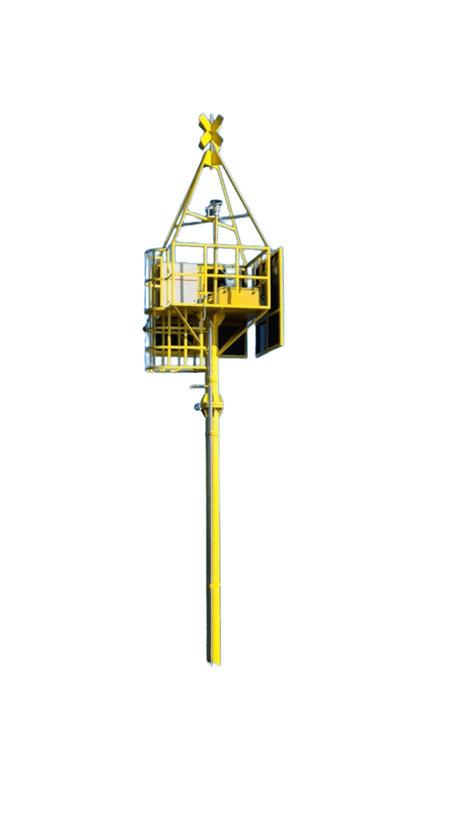
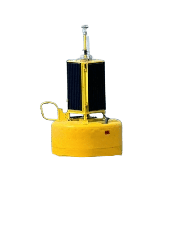

Loading...
Logout
Map layers
Layer
Temperature
Salinity
Dissolved oxygen
Current
Bathymetry
Depth
Surface
Bottom
Month
February
March
April
September
October
November
Sturgeon habitat
Select depth and month.
Observations
None
Sturgeon eDNA
Biotic pressures
Sturgeon water eDNA presence
Acipenser stellatus
Acipenser gueldenstaedtii
Acipenser ruthenus
Acipenser nudiventris
Water type
All
Marine
Freshwater
Sampling
All periods
Biotic pressures
Pressure
Neogobius melanostomus
Mnemiopsis leidyi
mycE gene
sxtA gene
Water type
All
Marine
Freshwater
Sampling
All periods
Legend
▲
Surface temperature (°C) - February
4.15
9.08

Coastal buoy

Offshore buoy
Isobaths
Sturgeon habitat area
eDNA sturgeon detections
Biotic pressure
🔇